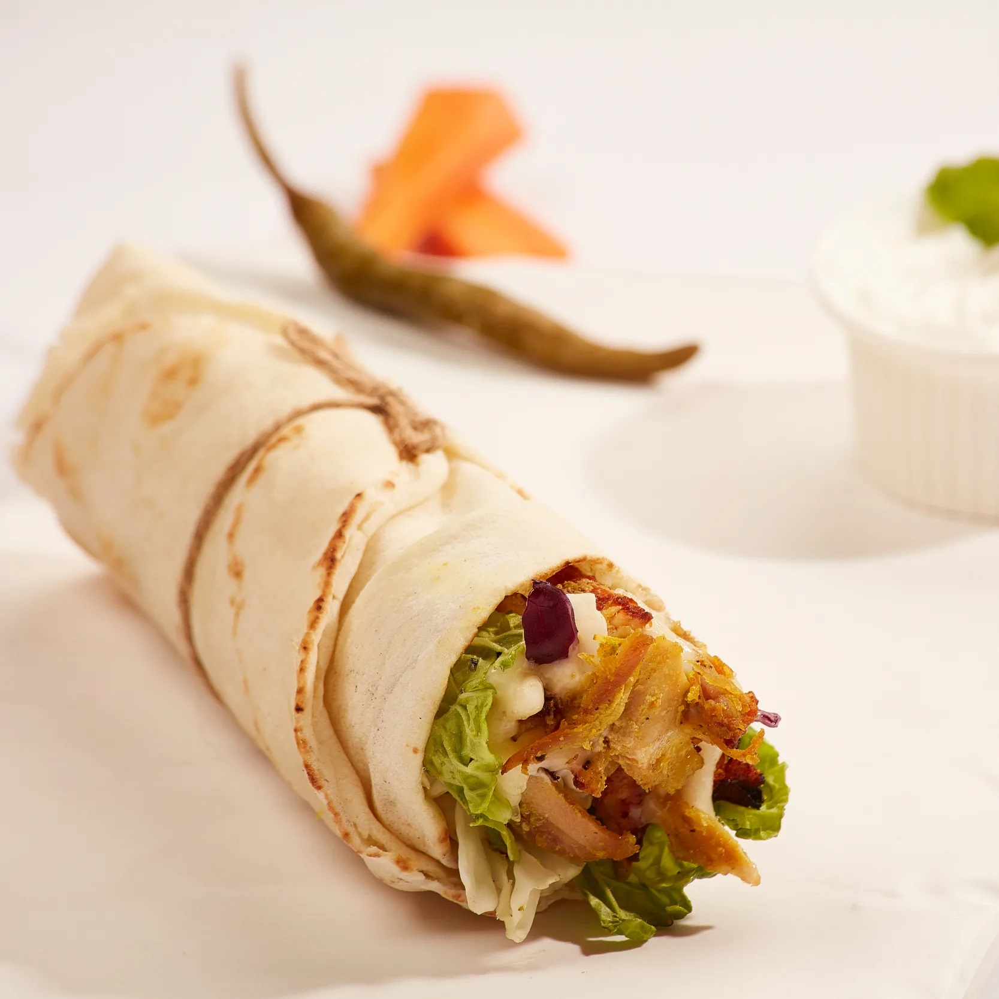

turkey-shawarma
an over stuffed saucy little sandiwtch with delicious chicken slices and crunchy vigitables

an over stuffed saucy little sandiwtch with delicious chicken slices and crunchy vigitables